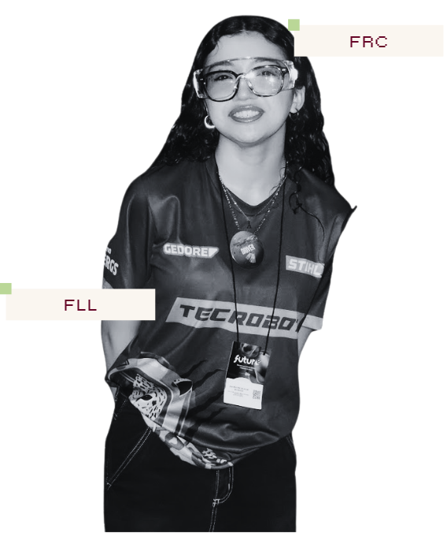
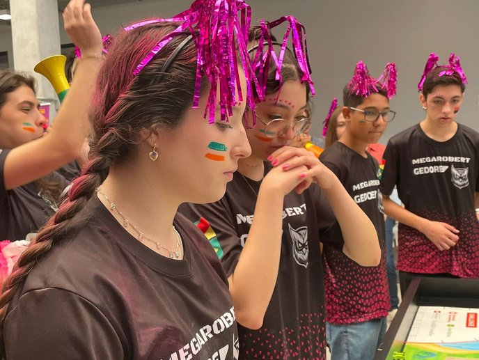
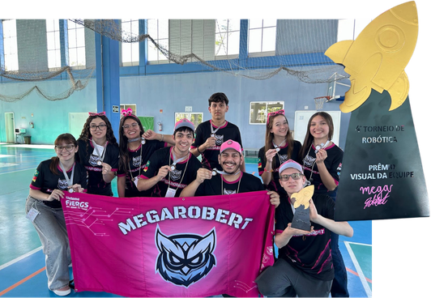
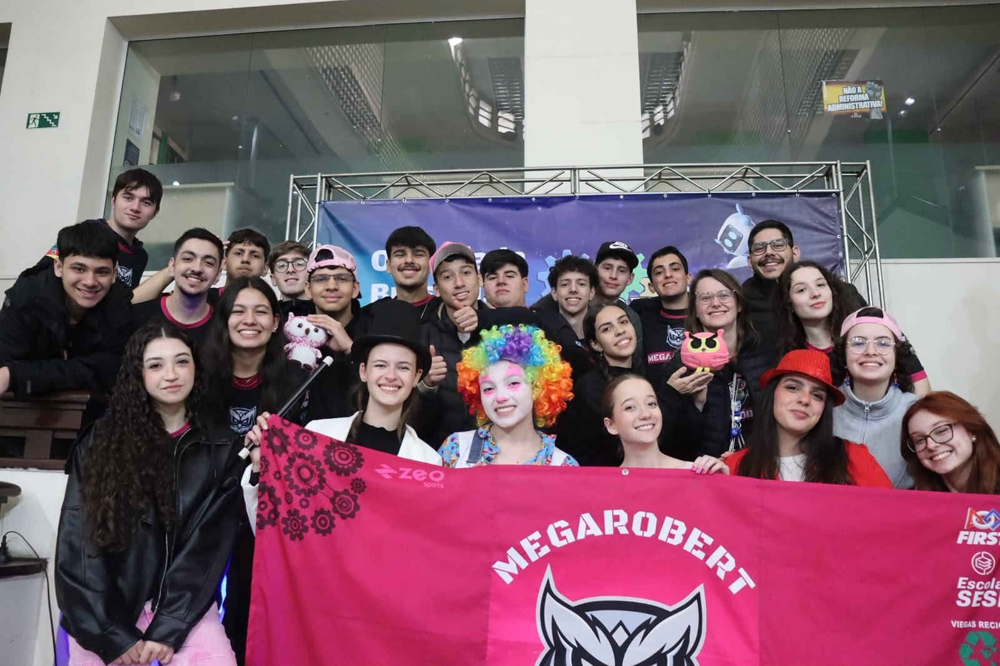
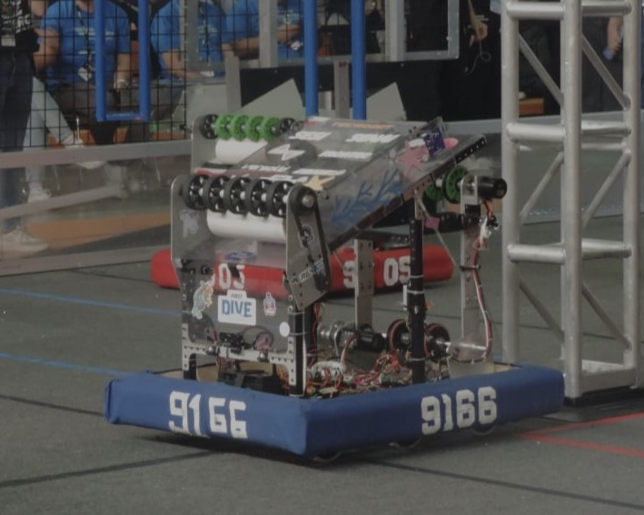
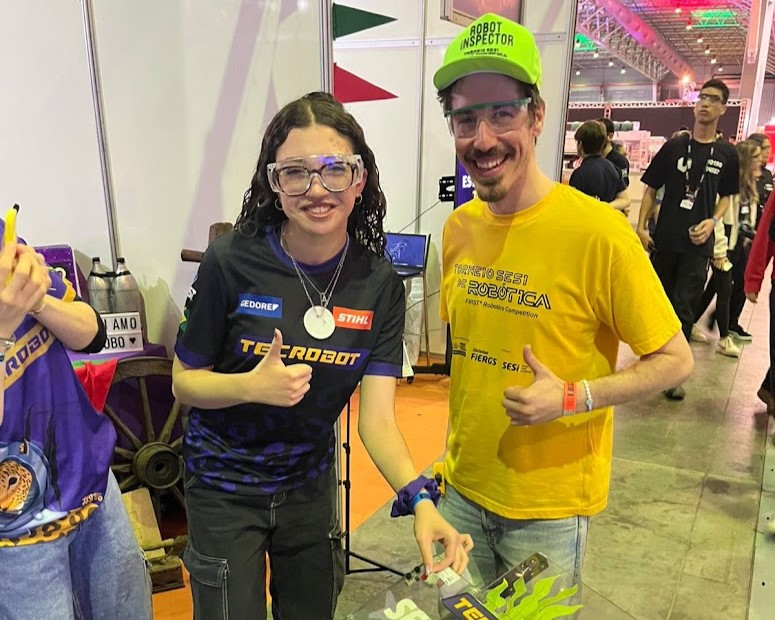
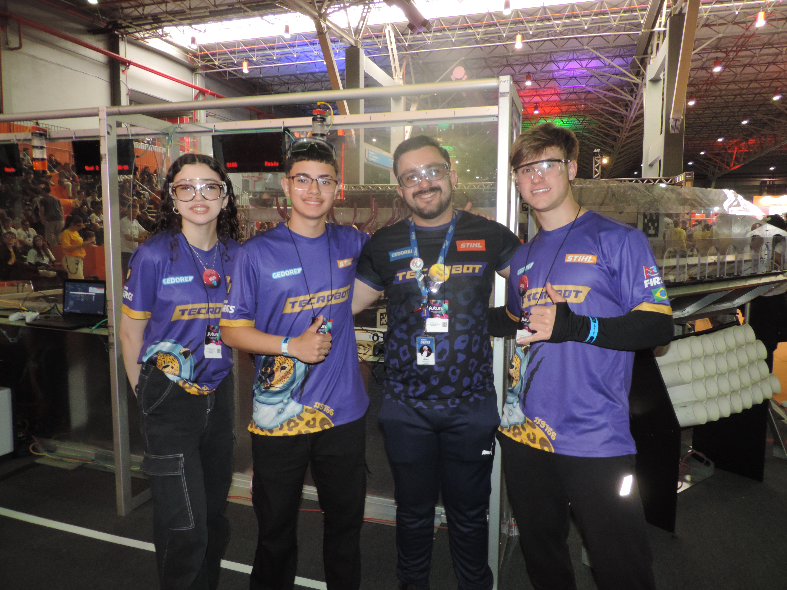

O que despertou em mim
Minha trajetória na FIRST me apresentou o mundo da tecnologia.

FIRST LEGO League
2023
Selecionada...
Foi na MegaRobert que comecei minha trajetória na FIRST. A FLL foi meu primeiro contato mais próximo com robótica competitiva e me apresentou a programação, construção de robôs e ao trabalho em equipe.

2024–2025
Liderança
Minha experiência na FLL passou a envolver não apenas o desenvolvimento técnico, mas também maior participação nas decisões e na dinâmica da equipe.

2026
Mentoria...
Depois de alguns anos como integrante da MegaRobert, passei a atuar como mentora voluntária da equipe. A experiência mudou minha relação com a robótica: além de continuar aprendendo, passei a contribuir com o desenvolvimento de outros integrantes e compartilhar conhecimentos que adquiri ao longo da minha trajetória.

FIRST Robotics Competition
Da FLL para a FRC
2024
UM NOVO DESAFIO
Atuei no desenvolvimento do software do robô, trabalhando com Java e com a lógica necessária para controlar seus diferentes sistemas e mecanismos. Além da atuação na área elétrica, participando da montagem e integração dos componentes responsáveis pelo funcionamento do robô.

2024–2025
TORNEIOS NACIONAIS
Durante uma das competições, tive a oportunidade de assumir a função de capitã da equipe. A experiência exigiu comunicação rápida, tomada de decisões e colaboração entre os integrantes em um ambiente de alta pressão.

Fora das Competições
LEVANDO A TECNOLOGIA PARA OUTROS ESPAÇOS
A experiência com a TecRobot também me proporcionou oportunidades de apresentar o projeto para diferentes públicos, explicando o funcionamento do robô e compartilhando a experiência da equipe.
